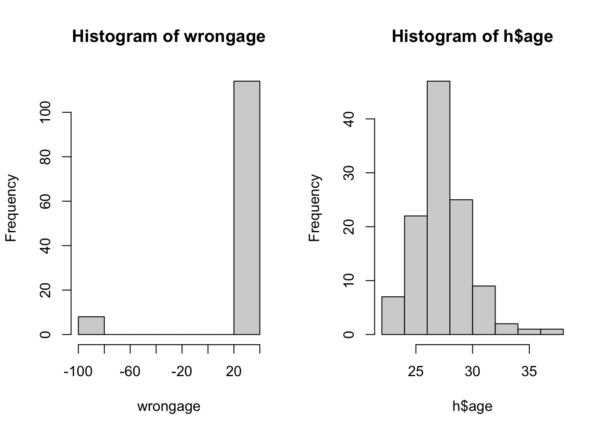
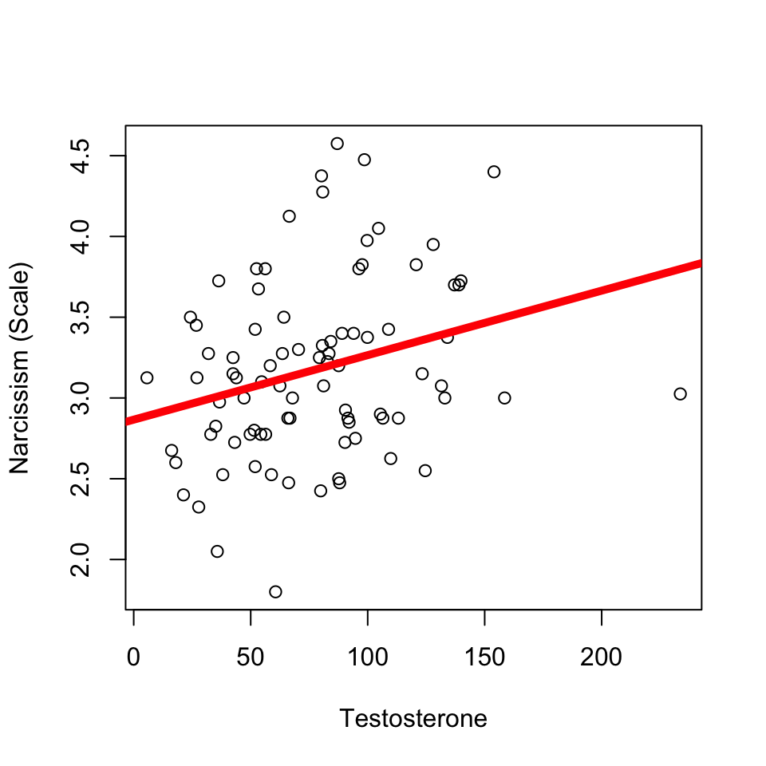
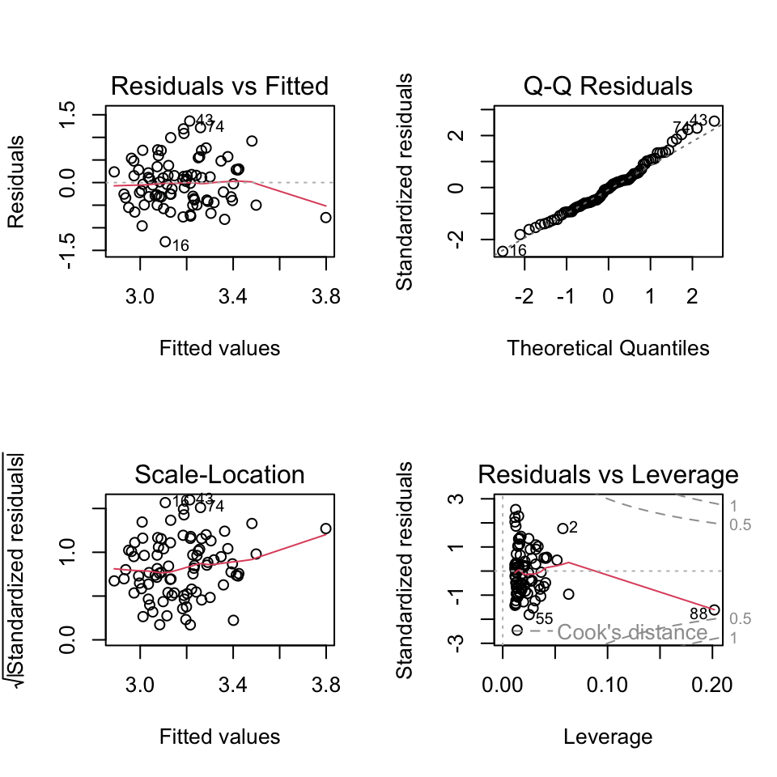
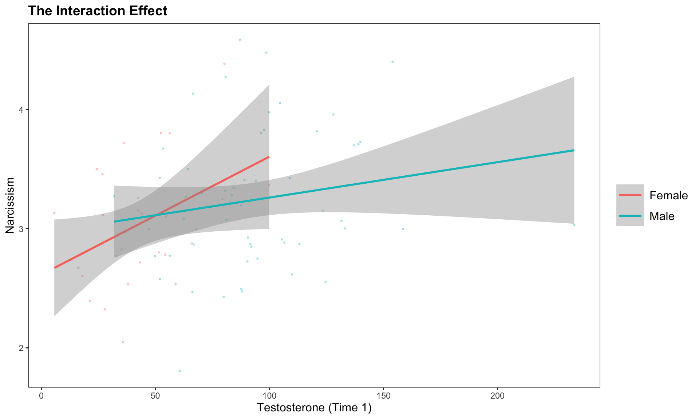
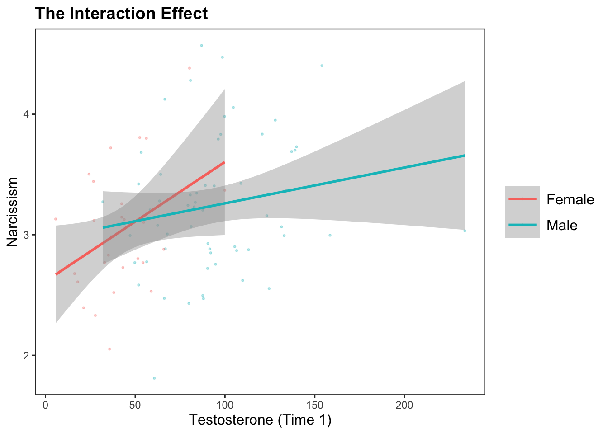
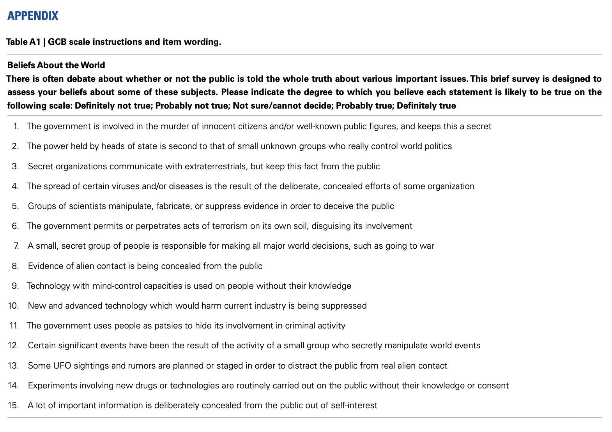
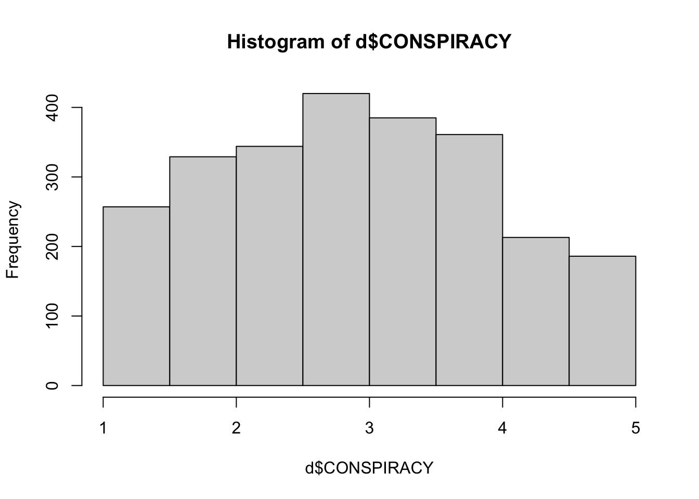

mod1 <- lm(narc_scale ~ sexF, data = h)
plotmeans(narc_scale ~ sexF, data = h, connect = F, xlab = "Sex", ylab = "Narcissism (Scale)")
mod1 <- lm(narc_scale ~ sexF, data = h)
plotmeans(narc_scale ~ sexF, data = h, connect = F, xlab = "Sex", ylab = "Narcissism (Scale)")
export_summs(mod1, error_pos = "right",
coefs = c("Sex (Male)" = "sexFMale"), digits = 3)| Model 1 | ||
|---|---|---|
| Sex (Male) | 0.263 * | (0.107) |
| N | 114 | |
| R2 | 0.051 | |
| *** p < 0.001; ** p < 0.01; * p < 0.05. | ||
par(mfrow = c(2,2))
plot(mod1)
mod2 <- lm(narc_scale ~ test1, data = h)
plot(narc_scale ~ test1, data = h, xlab = "Testosterone", ylab = "Narcissism (Scale)")
abline(mod2, lwd = 5, col = 'red')
export_summs(mod2, error_pos = "right",
coefs = c("Testosterone" = "test1"), digits = 3)| Model 1 | ||
|---|---|---|
| Testosterone | 0.004 ** | (0.001) |
| N | 86 | |
| R2 | 0.078 | |
| *** p < 0.001; ** p < 0.01; * p < 0.05. | ||
par(mfrow = c(2,2))
plot(mod2)
Sex is related to narcissism.
mod1 <- lm(narc_scale ~ sexF, data = h)
plotmeans(narc_scale ~ sexF, data = h, connect = F, xlab = "Sex", ylab = "Narcissism (Scale)")
export_summs(mod1, error_format = "", error_pos = "right",
coefs = c("Sex (Male)" = "sexFMale"), digits = 3)| Model 1 | ||
|---|---|---|
| Sex (Male) | 0.263 * | |
| N | 114 | |
| R2 | 0.051 | |
| *** p < 0.001; ** p < 0.01; * p < 0.05. | ||
Testosterone is related to narcissism…
mod2 <- lm(narc_scale ~ test1, data = h)
plot(narc_scale ~ test1, data = h, xlab = "Testosterone", ylab = "Narcissism (Scale)")
abline(mod2, lwd = 5, col = 'red')
export_summs(mod2, error_format = "", error_pos = "right",
coefs = c("Testosterone" = "test1"), digits = 3)| Model 1 | ||
|---|---|---|
| Testosterone | 0.004 ** | |
| N | 86 | |
| R2 | 0.078 | |
| *** p < 0.001; ** p < 0.01; * p < 0.05. | ||
but if testosterone is related to sex…
modx <- lm(test1 ~ sexF, data = h)
plotmeans(test1 ~ sexF, data = h, connect = F)
export_summs(modx, error_format = "", error_pos = "right")| Model 1 | ||
|---|---|---|
| (Intercept) | 41.77 *** | |
| sexFMale | 51.88 *** | |
| N | 90 | |
| R2 | 0.38 | |
| *** p < 0.001; ** p < 0.01; * p < 0.05. | ||
How are they uniquely related?
mod3 <- lm(narc_scale ~ sexF + test1, data = h)
export_summs(mod1, mod2, mod3, error_format = "", error_pos = "right", digits = 3,
coefs = c("Testosterone" = "test1",
"Sex (Male)" = "sexFMale"))| Model 1 | Model 2 | Model 3 | ||||
|---|---|---|---|---|---|---|
| Testosterone | 0.004 ** | 0.004 * | ||||
| Sex (Male) | 0.263 * | 0.011 | ||||
| N | 114 | 86 | 86 | |||
| R2 | 0.051 | 0.078 | 0.078 | |||
| *** p < 0.001; ** p < 0.01; * p < 0.05. | ||||||
library(ggthemes)
ggplot(data = h, aes(x = test1, y = narc_scale, color = sexF)) +
geom_point(size = .5, alpha = .3, position = "jitter") +
labs(title = "The Interaction Effect", x = "Testosterone (Time 1)", y = "Narcissism", color = "Sex") +
geom_smooth(method = lm) + theme_apa()`geom_smooth()` using formula = 'y ~ x'Warning: Removed 36 rows containing non-finite outside the scale range
(`stat_smooth()`).Warning: Removed 36 rows containing missing values or values outside the scale range
(`geom_point()`).
`geom_smooth()` using formula = 'y ~ x'Warning: Removed 36 rows containing non-finite outside the scale range
(`stat_smooth()`).Warning: Removed 36 rows containing missing values or values outside the scale range
(`geom_point()`).
library(arm)Loading required package: MASSLoading required package: MatrixLoading required package: lme4
arm (Version 1.14-4, built: 2024-4-1)Working directory is /Users/adcat/Documents/Documents - minicat/catterson.github.io/macssstats/slides
Attaching package: 'arm'The following objects are masked from 'package:psych':
logit, rescale, simThe following object is masked from 'package:jtools':
standardizemod4 <- lm(narc_scale ~ sexF * test1, data = h)
mod1z <- arm::standardize(mod1, NULL, TRUE)
mod2z <- arm::standardize(mod2, NULL, TRUE)
mod3z <- arm::standardize(mod3, NULL, TRUE)
mod4z <- arm::standardize(mod4, NULL, TRUE)
export_summs(mod1z, mod2z, mod3z, mod4z,
error_format = "", error_pos = "right")| Model 1 | Model 2 | Model 3 | Model 4 | |||||
|---|---|---|---|---|---|---|---|---|
| (Intercept) | 0.00 | -0.02 | -0.02 | 0.05 | ||||
| c.sexF | 0.25 * | 0.01 | -0.18 | |||||
| z.test1 | 0.29 ** | 0.28 * | 0.36 * | |||||
| c.sexF:z.test1 | -0.50 | |||||||
| N | 114 | 86 | 86 | 86 | ||||
| R2 | 0.05 | 0.08 | 0.08 | 0.09 | ||||
| *** p < 0.001; ** p < 0.01; * p < 0.05. | ||||||||
Think about an interaction effect that might be relevant to your Capstone Project <3
What is some PATTERN in the data that you expect to see or would be interested to test?
How might some OTHER variable influence this pattern?
scale : The variable that you want to measure as a continuous variable.
items : The specific question(s) in the scale. Each item measures some aspect of the variable the researcher is interested in.
positively keyed items : An item that measures the high end of the scale, where answering “yes” to the question means you are high on this variable.
negatively keyed items : An item that measures the low end of the scale, where answering “yes” to the question means you are low on the variable.
response scale : How people answer the scale items.

d <- read.csv("~/Dropbox/!GRADSTATS/COMPSS222/Datasets/Class Datasets/Conspiracy Data/data.csv", stringsAsFactors = T)
summary(d[,1:3]) Q1 Q2 Q3
Min. :0.000 Min. :0.000 Min. :0.000
1st Qu.:2.000 1st Qu.:2.000 1st Qu.:1.000
Median :4.000 Median :3.000 Median :1.000
Mean :3.473 Mean :2.964 Mean :2.047
3rd Qu.:5.000 3rd Qu.:4.000 3rd Qu.:3.000
Max. :5.000 Max. :5.000 Max. :5.000 d[d == 0] <- NA
summary(d[,1:3]) Q1 Q2 Q3
Min. :1.000 Min. :1.000 Min. :1.000
1st Qu.:2.000 1st Qu.:2.000 1st Qu.:1.000
Median :4.000 Median :3.000 Median :1.000
Mean :3.475 Mean :2.979 Mean :2.053
3rd Qu.:5.000 3rd Qu.:4.000 3rd Qu.:3.000
Max. :5.000 Max. :5.000 Max. :5.000
NA's :2 NA's :13 NA's :8 CONSP.df <- d[,1:15]
library(psych)
psych::alpha(CONSP.df)
Reliability analysis
Call: psych::alpha(x = CONSP.df)
raw_alpha std.alpha G6(smc) average_r S/N ase mean sd median_r
0.93 0.93 0.94 0.49 14 0.0019 2.9 1 0.48
95% confidence boundaries
lower alpha upper
Feldt 0.93 0.93 0.94
Duhachek 0.93 0.93 0.94
Reliability if an item is dropped:
raw_alpha std.alpha G6(smc) average_r S/N alpha se var.r med.r
Q1 0.93 0.93 0.94 0.49 13 0.0020 0.0109 0.47
Q2 0.93 0.93 0.94 0.48 13 0.0021 0.0102 0.48
Q3 0.93 0.93 0.94 0.49 14 0.0020 0.0087 0.49
Q4 0.93 0.93 0.94 0.48 13 0.0021 0.0109 0.46
Q5 0.93 0.93 0.94 0.49 13 0.0020 0.0116 0.49
Q6 0.93 0.93 0.94 0.48 13 0.0021 0.0108 0.47
Q7 0.93 0.93 0.94 0.48 13 0.0021 0.0102 0.48
Q8 0.93 0.93 0.94 0.49 13 0.0020 0.0089 0.49
Q9 0.93 0.93 0.94 0.49 13 0.0021 0.0112 0.47
Q10 0.93 0.93 0.94 0.50 14 0.0020 0.0105 0.50
Q11 0.93 0.93 0.94 0.48 13 0.0021 0.0108 0.47
Q12 0.93 0.93 0.94 0.48 13 0.0021 0.0096 0.47
Q13 0.93 0.93 0.94 0.49 13 0.0020 0.0095 0.49
Q14 0.93 0.93 0.94 0.48 13 0.0021 0.0114 0.47
Q15 0.93 0.93 0.94 0.50 14 0.0020 0.0099 0.49
Item statistics
n raw.r std.r r.cor r.drop mean sd
Q1 2493 0.73 0.73 0.71 0.68 3.5 1.5
Q2 2482 0.75 0.74 0.73 0.70 3.0 1.5
Q3 2487 0.68 0.68 0.67 0.63 2.1 1.4
Q4 2489 0.79 0.79 0.77 0.75 2.6 1.4
Q5 2485 0.71 0.71 0.68 0.66 3.3 1.5
Q6 2490 0.76 0.76 0.74 0.72 3.1 1.5
Q7 2488 0.76 0.75 0.74 0.71 2.7 1.5
Q8 2485 0.70 0.69 0.69 0.64 2.5 1.6
Q9 2485 0.72 0.72 0.70 0.68 2.2 1.4
Q10 2495 0.61 0.61 0.56 0.54 3.5 1.4
Q11 2486 0.74 0.75 0.73 0.70 3.3 1.4
Q12 2484 0.80 0.80 0.79 0.76 2.7 1.5
Q13 2482 0.72 0.72 0.71 0.67 2.1 1.4
Q14 2492 0.76 0.76 0.74 0.72 3.0 1.5
Q15 2494 0.61 0.62 0.58 0.56 4.2 1.1
Non missing response frequency for each item
1 2 3 4 5 miss
Q1 0.16 0.12 0.12 0.27 0.32 0.00
Q2 0.24 0.19 0.16 0.20 0.22 0.01
Q3 0.55 0.13 0.12 0.10 0.10 0.00
Q4 0.32 0.19 0.15 0.20 0.14 0.00
Q5 0.19 0.14 0.13 0.28 0.26 0.00
Q6 0.23 0.15 0.15 0.23 0.25 0.00
Q7 0.33 0.19 0.13 0.18 0.17 0.00
Q8 0.45 0.12 0.14 0.12 0.18 0.00
Q9 0.46 0.19 0.12 0.12 0.11 0.00
Q10 0.14 0.12 0.14 0.30 0.30 0.00
Q11 0.16 0.14 0.19 0.27 0.24 0.00
Q12 0.34 0.18 0.15 0.17 0.17 0.00
Q13 0.51 0.15 0.15 0.10 0.10 0.01
Q14 0.25 0.17 0.15 0.22 0.20 0.00
Q15 0.05 0.05 0.08 0.27 0.55 0.00d$CONSPIRACY <- rowMeans(CONSP.df, na.rm = T)
hist(d$CONSPIRACY)
| Likert Scale Item | Item Evaluation |
|---|---|
| Q1. I feel that I am a person of worth, at least on an equal plane with others. | |
| Q2. I feel that I have a number of good qualities. | |
| Q3. All in all, I am inclined to feel that I am a failure. | |
| Q4. I am able to do things as well as most other people. | |
| Q5. I feel I do not have much to be proud of. | |
| Q6. I take a positive attitude toward myself. | |
| Q7. On the whole, I am satisfied with myself. | |
| Q8. I wish I could have more respect for myself. | |
| Q9. I certainly feel useless at times. | |
| Q10. At times I think I am no good at all. |